Scenario: Musical Toy for Toddlers
Prompt:
Design a way for young children with minimal language skills to explore music.
Context:
Browser based musical instruments offer users the ability to dynamically perform music and explore complex audio design. While these interactions allow for a depth of control, they can be intimidating for many adult users, let alone you children whose language skills are still developing.
Discussion:
Based on my understanding of the scenario's background and prompt, this project differs from most traditional browser based instruments in how it defines the "purpose of playing". Most browser based instruments focus on deep parameter control and technical mastery, and they're mainly built for adult users with abstract cognitive ability. However, the target users for this project are toddlers, whose language ability is still developing. Because of this, the instrument's main purpose is not to teach traditional music theory or complex musical concepts. Instead, it should offer an intuitive, low barrier way for toddlers to explore the causal relationship between their own physical actions and the sounds those actions create.
From the perspective of child development, this purpose is really about building a child's motivation to explore and their sense of self-efficacy, rather than chasing technical skill or open ended composition. Toddlers can't plan ahead, read instructions, or grasp abstract concepts like sequencing. So "making music" here is no longer a deliberate, skill based act of arrangement. Instead, its real value lies in embodied empowerment. It lets a child discover that even without any real playing skill, their casual movements can still trigger something that sounds beautiful, right away. In this sense, the instrument isn't really about what the child ends up "producing". It's about how the interaction lets them directly feel their own ability and sense of control.
Based on this purpose, I believe approachability, playfulness, encouragement and guidance are the key values for this scenario. It should be intuitive and easy to use, offering an experience that matches a toddler's level of understanding, so that first contact with it doesn't feel intimidating or overly complex. It should be fun, so that exploring music feels enjoyable rather than like a formal learning task. Given the design philosophy behind children's toys, it should also carry a positive educational purpose. Through ongoing, encouraging feedback, a child should feel a sense of achievement within open ended exploration, one that doesn't depend on accuracy or skill. A toddler should feel that any attempt counts as a success. It should also offer a form of guidance, gently steering the child toward a coherent outcome, without putting any pressure of being right or wrong.
Synopsis
My project is a browser based musical piano toy designed for toddlers. The computer keyboard is turned into a simplified piano interface with eight keys, matching one octave, while the screen acts as a visual feedback panel, showing an animated response every time a key is pressed. The project includes four simple and familiar children's songs as a song library, as well as offers two modes side by side, for either the child or an accompanying adult to choose from.
Free Play / Assisted Play mode: the child can press any key freely and get an immediate sound and visual response.
The system plays back a melody fragment from the notes of the currently selected song, in sequence or in
some adapted way, so that no matter how the child presses the keys, what they hear is always a pleasant
and coherent piece of music. This creates the direct feeling of "I played that myself."
Learning Mode: an animation on screen gradually shows the child which key to press next,
guiding them through the same song step by step. There's no scoring, no failure state, and no negative
error message anywhere in the process. It's meant to feel like a gentle and gradual experience of following along.
Response to Purpose and Worth
This design first responds to the scenario's purpose of letting toddlers, whose language skills are still developing, explore music. The project doesn't ask a child to read complicated text, understand traditional sheet music, or learn technical musical parameters. Instead, it simplifies the main interaction down to a direct key press. The computer keyboard provides a real and physical input surface, so a child can trigger sound through a hand movement right away, while the browser handles giving clear visual feedback. The goal here is to shrink the gap between an action and its result, so that a toddler's exploration of music is grounded in a direct cause and effect relationship.
On the level of worth, the interface design draws on physical early learning music toys and children's toys more generally. The screen only shows what's needed for the current interaction, using large visual elements, clear colours and animation to help a toddler read the system's state. A child can start pressing keys right away, without needing to understand a set of instructions first, which lowers the barrier to entry a lot. Playfulness comes through mainly in the immediate sound and animation feedback. Every key press produces not just a sound but also a clear response from the shapes, characters or colours on screen, so the whole experience feels closer to playing with a responsive musical toy than completing a formal learning task. The two modes each carry out a different value from the list above. Free Play mode is mostly about playfulness and encouragement. Since the result is always pleasant and there's no way to "press it wrong," a child can explore freely without any pressure, and every attempt is gently turned into a "successful" performance by the system. Learning Mode is mostly about guidance. Through visual prompts, it gently leads the child toward playing a whole song, but this guidance is always offered as an invitation rather than an instruction with a right or wrong answer, so it never puts any pressure of failure on the child.
Framing
- Concepts
The project is built around a few connected core concepts: direct cause and effect, embodied interaction, scaffolding, self-efficacy, and play based musical exploration.
The most important one is the direct causal link between action and sound. When a toddler presses a real key on the keyboard, the system responds at once with sound and visuals, so the interaction can be understood without any complex, abstract rules getting in the way.
The project also draws on the idea of scaffolding. Rather than expecting a toddler to already have the ability to play independently, the system lowers the barrier to entry by limiting the musical range, offering visual prompts, and giving positive feedback. Even so, the child still does the work of triggering and driving the music forward, so the system's support never fully replaces their participation.
Within this framework, making music isn't defined as producing a technically accurate piece. It's closer to play based exploration. What matters here is how a toddler builds a sense of control through repeated actions, sounds and feedback rather than teaching complete piano skills or music theory.
- Characterisation
The project as a whole is shaped to feel like a digital early learning musical toy, not a simplified version of professional music software.
Its visual language draws inspiration from physical early learning music toys, sharing a similar design vocabulary: bright colours and cartoonish animal or character shapes wrapped around a very simple set of keys, with interaction that's highly intuitive (press it and it responds), and almost no reliance on written instructions. The characterisation of these physical toys, their soft colours, friendly character illustrations and rounded shapes, will directly shape the visual style of this project. The goal is for a toddler to get the same sense of familiarity and low pressure from the browser interface that they'd get from a physical toy, rather than something that looks like a professional synth or DAW interface, with dense parameters, greyscale colours and abstract icons.
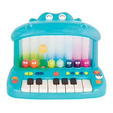
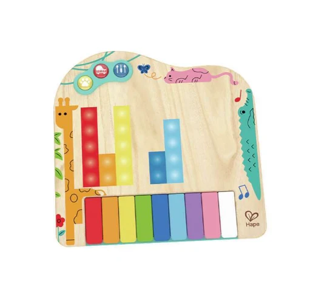
At the same time, the visual design won't try to faithfully recreate a real piano. Once the physical keyboard is handling the main tactile input, the browser screen is free to focus purely on feedback and guidance, for example through colour changes, movement, scaling, simple character animation, or other visual responses tied to each key press.
- Interaction and Audio
The core interaction stays simple and centres around key presses. The project plans to use a small group of adjacent computer keys as the main playing area, so a toddler doesn't need to locate anything precisely across a full keyboard.
The sound design won't try to realistically simulate a full piano. Instead, it will use a small set of sounds that are clear, easy to tell apart, and suited to a children's music toy. Every input should get an immediate sound response, so a toddler can quickly build the connection between their action and the result.
In Free Play mode, the system's support stays limited. It might rely on a preset scale, a simple melodic structure, or a restricted set of notes, so that even random key presses still sound reasonably harmonious. What the system offers is musical support, not a full substitute for the child's own playing. Learning Mode uses a preset song and guides the child step by step through visual prompts. The musical content stays short, repetitive and easy to follow, so it can hold a toddler's attention, without introducing complex rhythms, notation or technical skill.
- Extended Technique
This project plans to use Random (Math.random()) as its extended technique.
Random won't be used to decide the main relationship between key presses and notes, since keeping a clear and predictable cause and effect matters a lot for toddler users. Instead, it will be used for secondary variation, for example choosing between a few different positive visual responses, animation variations, or similar sounding audio effects. This way, pressing the same key repeatedly won't always produce exactly the same feedback, keeping things fresh and fun, without breaking a toddler's basic understanding of what a given action leads to.
- Technologies
The project will be built in the browser using:
- HTML to structure the page and main interface content
- CSS for layout, colour, characterisation and simple animation
- JavaScriptto handle keyboard input, mode state, guidance logic, and visual and audio feedback
- Tone.jsfor sound playback and control in the browser
- KeyboardEventto read physical keyboard input
- Math.random()to implement limited random variation
The project won't rely on complex computer vision, 3D rendering, or backend web services. Technology choices are made with one goal in mind: keeping the core interaction stable and working well.
Interaction design analysis
Example 1: Holdspace by Carlos Yusim
Focus: Interaction Simplicity and Feedback
Holdspace uses a single, deliberately limited interaction: holding down and releasing the spacebar. According to Yusim's own description of the project, the entire piece was designed around choosing one simple interaction first, and building the music around it afterwards, rather than the more common approach of designing a rich interface and then mapping sound onto it. There are no menus, no visible parameters, and no alternative input methods to learn. Holding the spacebar produces an immediate, continuous audiovisual response, generated shapes shift and the soundscape swells, and releasing it lets both settle back down, again without delay. The connection between input and outcome is about as short as a browser based interaction can be.
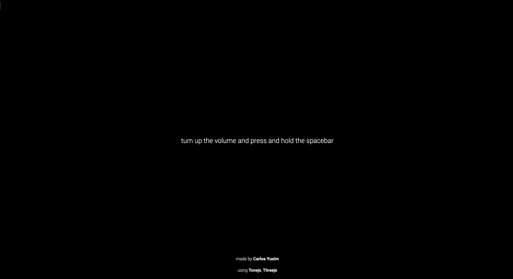
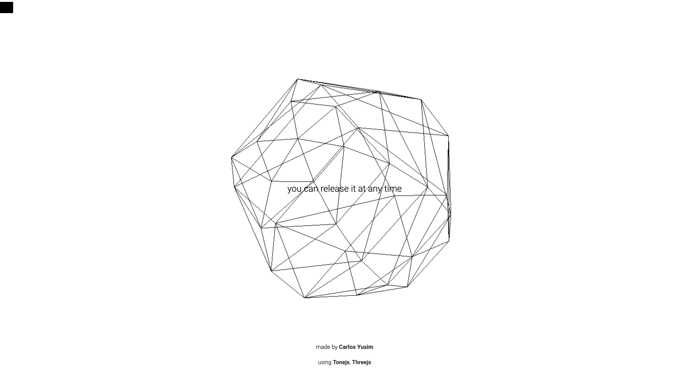
Impact on project proposal: this directly supports the core claim in my Discussion, that a toddler's exploration of music should be grounded in a direct, easily understood link between their own action and the resulting sound. Holdspace demonstrates that this directness does not need to come at the cost of a rich or expressive result, a single, low complexity input can still produce something continuously responsive and pleasant to experience. This reinforced my decision to keep the core interaction in Free Play mode reduced to a single, unambiguous action per key, rather than layering in secondary gestures such as holding, dragging, or combining keys, even though these might add expressive depth for an older user. For a toddler, the priority is that the number of things they need to understand before something happens stays as close to zero as possible.
Example 2: OTS-01 by bellicapelli
Focus: Characterisation and Information Design
OTS-01 is a browser based "virtual toy synth" presented as a pixel art device, complete with an on screen keyboard, drawable waveforms, and a wide range of parameters including filters, reverb, delay, chorus, and pitch control. Its most distinctive information design choice is that many of these advanced parameters are hidden behind a device casing the user has to visually "unscrew" before they become accessible, so a first time user sees a much simpler toy than the instrument actually contains.
This is a clever piece of information design for its actual audience, hobbyist musicians and sound designers, since it lets a playful surface coexist with genuine depth. However, analysing it against my own project's purpose exposes a mismatch: even the "unscrewed" simple version of OTS-01 still assumes the user can read labels, understand audio terminology, and operate many small on screen controls with precision. The toy aesthetic disguises the complexity, but does not remove it.
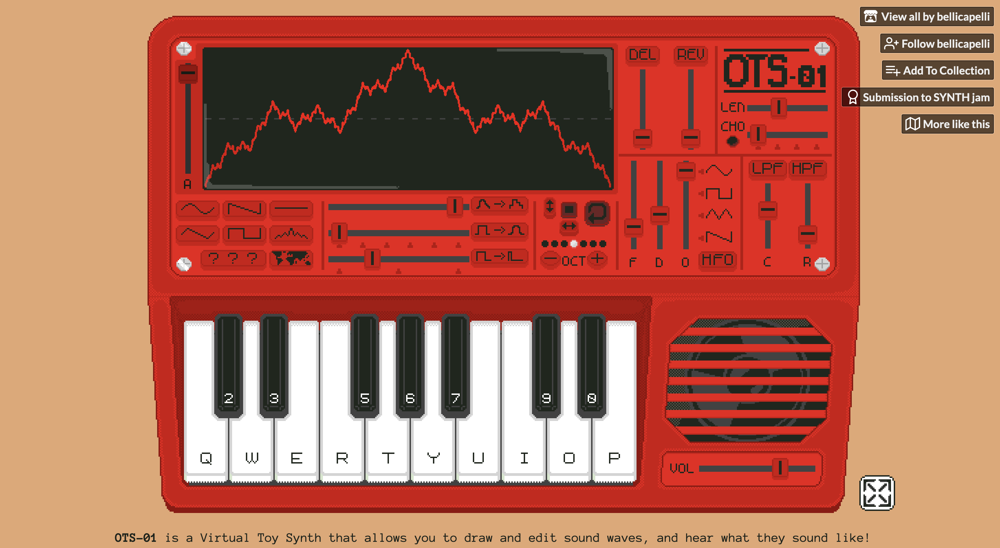
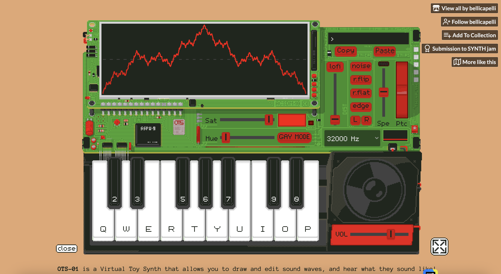
Impact on project proposal: this served mainly as a cautionary contrast. It confirmed that a friendly, toy like visual style is not on its own enough to make an interface appropriate for toddlers, the underlying number and precision of controls has to be reduced as well, not just visually softened. This directly supports the decision in my Framing section to exclude complex parameter control entirely, rather than attempting to hide it behind a simplified skin.
Example 3: OWLIE BOO
Focus: Purpose and Worth
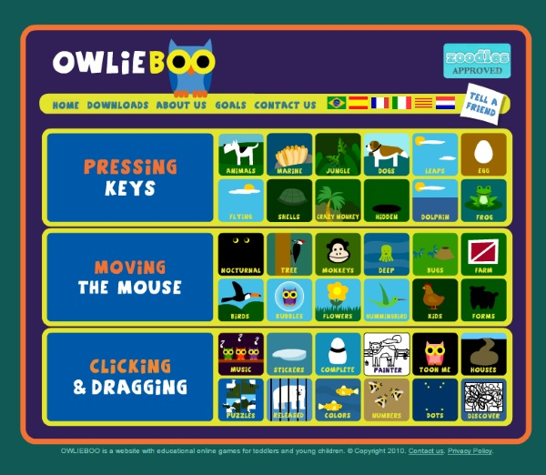
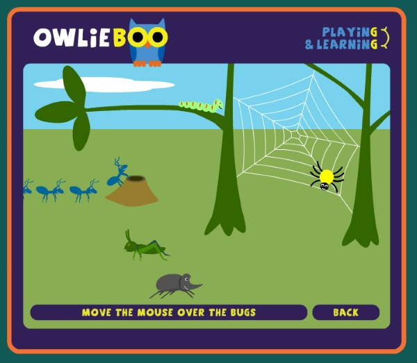
OWLIE BOO is a browser based collection of games for children aged one to five, created by a parent for his own toddler son. Rather than a single game, it is organised into tiers built around one motor skill at a time, first pressing any key, then moving the mouse, then clicking and dragging. Within the "moving the mouse" tier alone, the same simple action is repeated across several different scenes: guiding a baby animal back to its mother, revealing something hidden behind an object, or making a character react as the cursor passes over it. The site's own description states explicitly that its games are non violent and non competitive, and that children never lose, they simply progress little by little according to their own development.
This structure reveals a purpose that operates on two levels at once. On the surface, each scene is a small self contained game with a light narrative. Underneath, the actual purpose is skill acquisition through repetition, letting a child rehearse the same simple movement many times, in different dressing, without it ever feeling repetitive or effortful. The worth embedded in this design follows directly from its explicit removal of losing and competition. Every scene guarantees a satisfying outcome regardless of how precisely the child moves the mouse, so feedback always confirms progress rather than measuring accuracy. This consistent, low stakes feedback loop is what teaches a child, almost incidentally, that their movement is connected to an effect on screen, and it is also what motivates them to keep exploring, since every small action reliably leads to something pleasant happening next.
Impact on project proposal: this reinforced a distinction I want to hold onto for both of my own modes. In Free Play mode especially, the goal is not to teach a child anything about music theory, in the same way that OWLIE BOO is not really trying to teach precise mouse control through any single scene, it is really about repetition without pressure, letting the same underlying cause and effect relationship (a key press leads to a pleasant sound) repeat itself often enough that a toddler internalises it without being told. It also confirmed the importance of never letting an outcome read as unsuccessful. No matter which key a child presses, or how a child follows the prompt in Learning Mode, the result should always land somewhere in the range of "that worked," never "that was wrong," in the same way that no scene on OWLIE BOO can be lost.
Example 4: Hey Duggee
Focus: Characterisation and Information Design
Hey Duggee Colouring is a browser based activity built around characters from the children’s animation Hey Duggee. Users can colour existing pictures or create their own scene using different backgrounds and characters. What I find most useful about this example is how its characterisation and information design work together to make the experience approachable for young children.
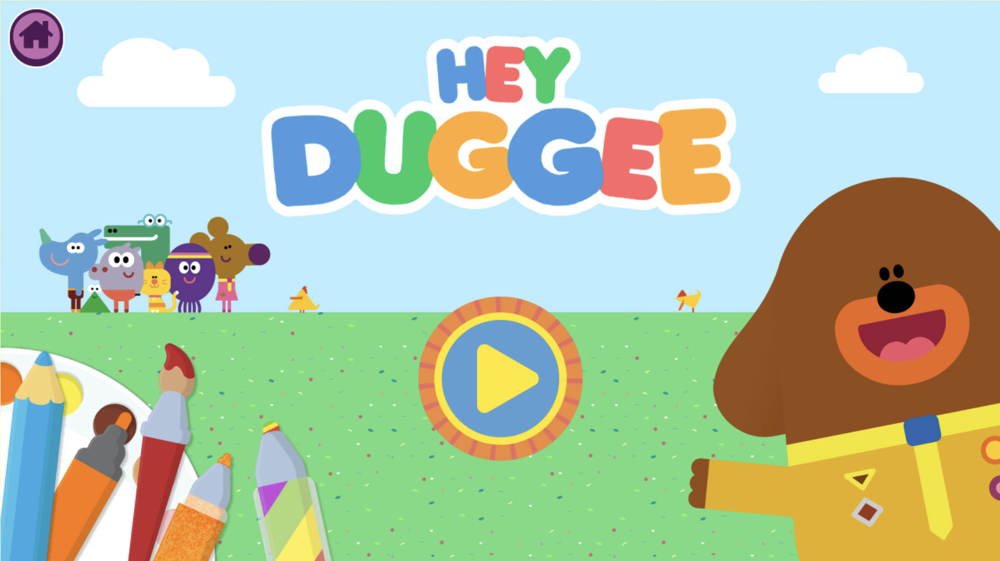
The whole activity uses a consistent child friendly visual language. Cartoon characters, bright colours, simple icons and playful patterns make the interface feel familiar and fun. The interaction feedback also follows the same style. pressing an interactive button produces a short sound effect consistent with the show's own sound design, so the audio and visual language work together as one coherent world, rather than a generic interface layered on top of licensed artwork.
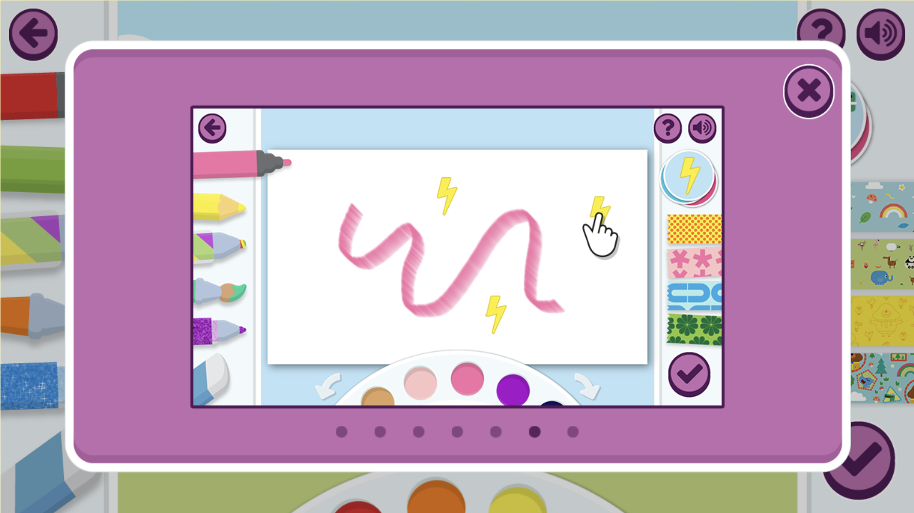
Another important feature is that the information design follows the same logic of restraint. There is no written text anywhere on screen. Colours, tools and characters are represented entirely through icons and pattern swatches, and the page shows only what is needed for the current action, nothing more. This is tested most clearly in how the game handles instructions, normally one of the places text is hardest to avoid. Rather than falling back on written help, the tutorial explaining how to use each tool is delivered through short animations, broken into small, sequential demonstrations, one action at a time. This keeps the total amount of information on screen at any moment very low, without leaving a child unsure of what to do.
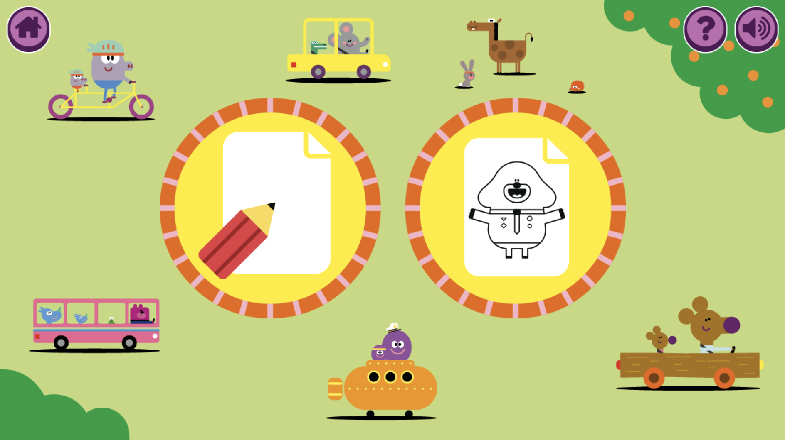
The worth of this design also comes through in its structure of choice. A child can either start from a blank canvas and draw freely, or select an existing background and character and colour it in. This supports both playfulness and guidance without turning the experience into a task based on correct or incorrect results.
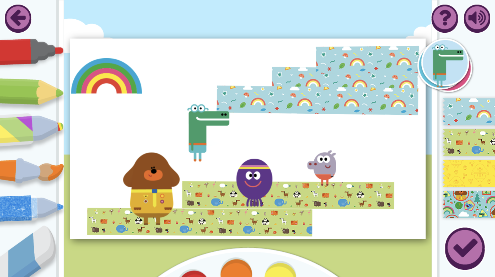
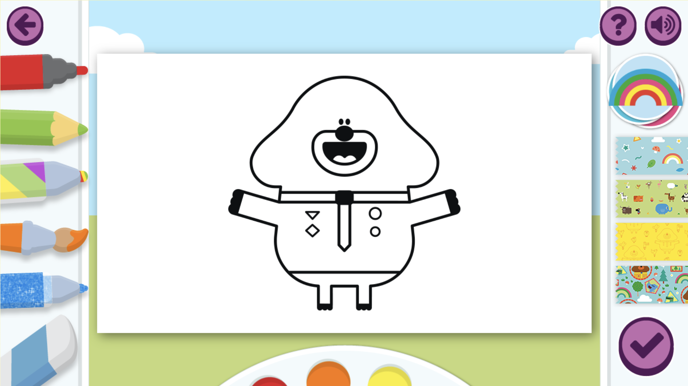
Impact on project proposal: this offers the closest parallel yet to my own two mode design. Free drawing on a blank canvas mirrors what my Free Play mode is trying to achieve, an outcome that cannot be wrong, produced through unstructured input, while colouring a preset picture mirrors the more guided, outcome oriented experience my Learning Mode is aiming for. Seeing this same "open canvas versus guided template" pairing appear independently in a well established children's product reinforces that offering both an unstructured and a structured mode side by side, rather than forcing a child to choose one approach for the whole experience, is a sound way to serve different moments of a child's attention and confidence. It also raised the bar for how far I should push consistency between visual style, sound design and information design. Hey Duggee's tutorial shows that even I introduce a user guide, it can be explained without text, through small animated demonstrations, which is a stronger and more achievable model for my own onboarding than I had originally planned.